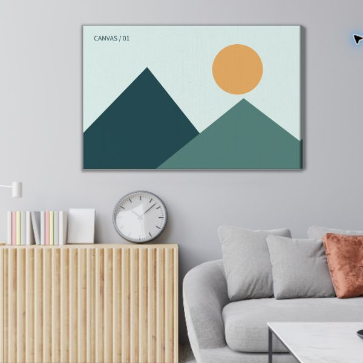
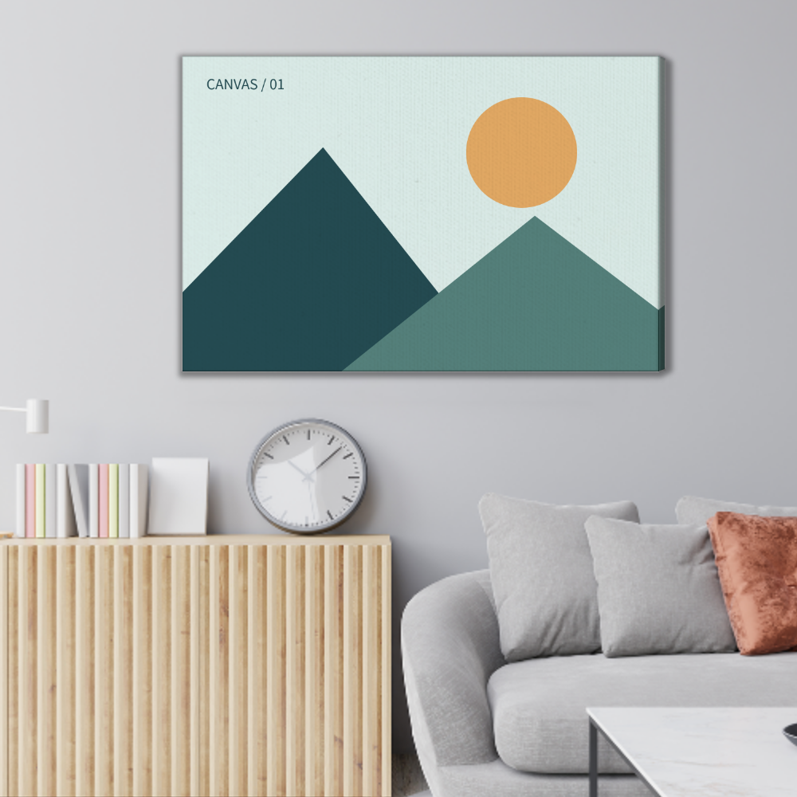
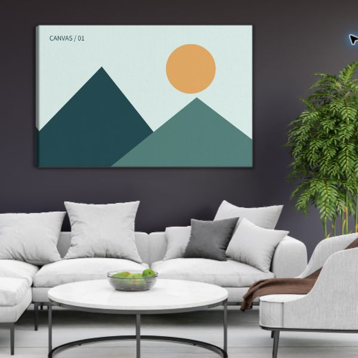
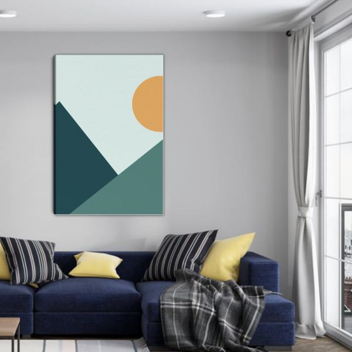
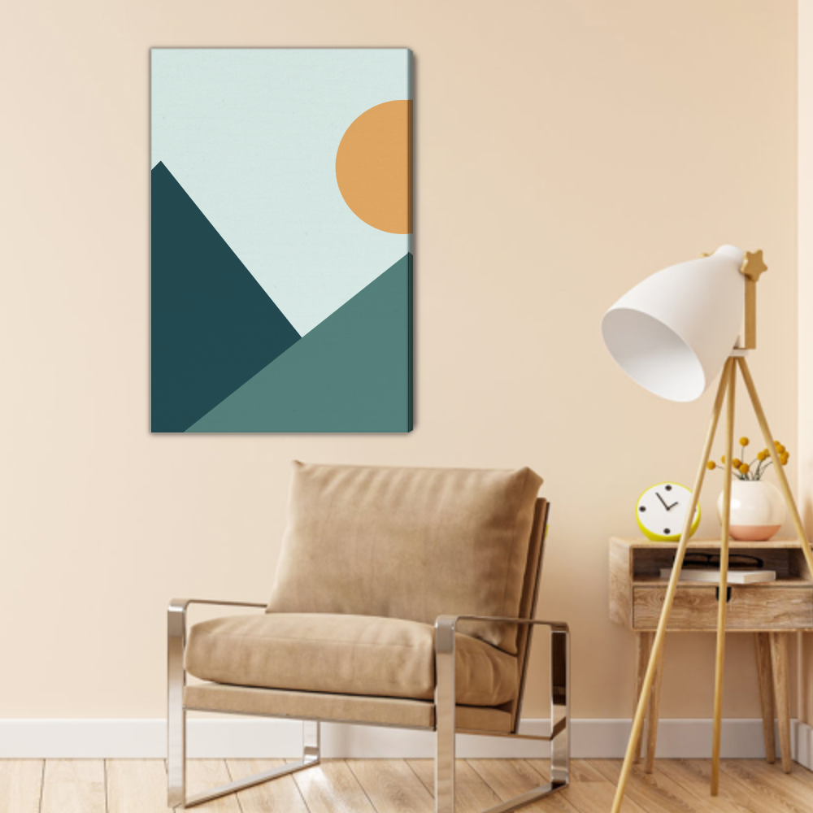

<meta charset="utf-8"><title>聚鼎原场景逐项对照</title><style>body{font:16px system-ui;background:#f3f5f8;margin:24px;color:#17263b}main{max-width:1240px;margin:auto}.pair{display:grid;grid-template-columns:1fr 1fr;gap:18px}figure{margin:0;background:white;padding:12px}img{width:100%;display:block}section{margin:30px 0}p{line-height:1.7}figcaption{padding:8px}h2{font-size:20px}</style><main><h1>聚鼎原场景 / 本地重放 · 同图验收</h1><p>左：聚鼎网站大图预览截图。右：本地 PNG 导出。使用同一张 compare-source.png；竖版居中裁切。已改用对应产品的原始 PSD 图层定位、遮罩与变换矩阵，白底保持原版本。</p><p>场景导出统一 1000×1000；底层资源仍为网站预览 PNG，并不代表高清生产素材。截图缩放、WebGL 与 Canvas 采样存在细微差异，本页供视觉验收，不宣称逐像素完全一致。</p><a href="/">返回工作台</a><section><h2>横版 / 聚鼎场景01 · 浅色客厅</h2><div class="pair"><figure><figcaption>聚鼎原效果</figcaption></figure><figure><figcaption>本地按原参数重放</figcaption></figure></div></section><section><h2>横版 / 聚鼎场景02 · 深色客厅</h2><div class="pair"><figure><figcaption>聚鼎原效果</figcaption></figure><figure><figcaption>本地按原参数重放</figcaption></figure></div></section><section><h2>竖版 / 聚鼎场景01 · 蓝色沙发客厅</h2><div class="pair"><figure><figcaption>聚鼎原效果</figcaption></figure><figure><figcaption>本地按原参数重放</figcaption></figure></div></section><section><h2>竖版 / 聚鼎场景02 · 米色休闲椅</h2><div class="pair"><figure><figcaption>聚鼎原效果</figcaption></figure><figure><figcaption>本地按原参数重放</figcaption></figure></div></section></main>